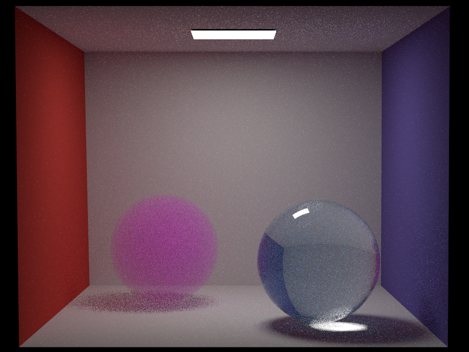

**Intel Denoising**
Student Name: Madeleine Sandri
Legi Number: 18-823-948
# Introduction and Set Up
The goal of this feature was to add the Intel® Open Image Denoise external library to my code to use to remove the grain in my renders.
I added oidn as a `git submodule` to my project to match the way the other external libraries were integrated. This took quite some time to understand, and I had to build OIDN and also rebuild nori which led to the same errors I encountered whilst running cmake to originally build the project (gcc version problems, libraries not found). I eventually managed. To link the library to my Nori project after having added the submodule, I made sure to include the OIDN library in `CMakeLists.txt` and especially, `ext/CMakeLists.txt` by inspiring myself from the way the other external libraries were linked.
The final command that allowed my code to build was the following :
`CPPFLAGS="-Wno-changes-meaning -include cstdint" CXXFLAGS="-Wno-changes-meaning -include cstdint" CC=gcc-12 CXX=g++-12 make -j8`
# Implementation
To make my renders pass through the denoiser, I added the following code to `render.cpp` in the method `renderScene` after the image saves the raw render:
- Prepare new OIDN device, create empty output and color buffers on which the denoising will be performed
- Populate the color buffer with the values of the raw rendered image that feature in the bitmap
- Perform the series of OIDN denoising steps : prepare filter and execute filter
- Check for errors
- Create tempBuffer that is an array of color3f, populate with data received from outputBuffer of the denoising. Create new bitmap that you populate with the values inside the tempBuffer and save png and exr (add "_denoise" to file name).
I also added to `Bitmap.h` and `Bitmap.cpp` a method `void setPixelsFromBuffer(const std::vector& buffer)` that takes as input an array of Color3f pixels and populates the bitmap with these values.
**IMPORTANT** To run properly, make sure the reconstruction filter of the camera is set to "box" in the xml scene
# Validation
To validate, I am taking two rather simple scenes and comparing them with their denoised version at different sample counts. These two scenes can be found in `scenes/denoise/`

As we see, the denoiser is quite impressive. It preserves edges and colors extremely well. It just gets a little confused in very noisy places (e.g. medium-shadow boundary in pink medium sphere in first scene), but this confusion improves with renders of higher sample count. For my final image, I will likely render it a long time and get a high sample count so the denoiser works cleanly.
# Issues and comments
- I unfortunately did not have time to also denoise with the normal filter using the `Normals` Integrator, but I acknowledge that it is possible to to this to even further improve the denoise result and know that it wouldn't be too difficult to add!
- I had issues with cmake again, it is never easy to rebuild the whole nori project and took me quite some time.
- I found that the OIDN Documentation was not the easiest to understand and there are not many threads about it online. But I am very happy with the result now that it works!
- Took many of hours of running in circles before understanding that I needed to change the reconstruction filter of the camera to make the denoising work.
- The addition of this library caused issues with regards to the CI. I had to modify `.gitlab-ci.yml` quite a bit to make it build. This included downloading new packages and removing the cache builds.